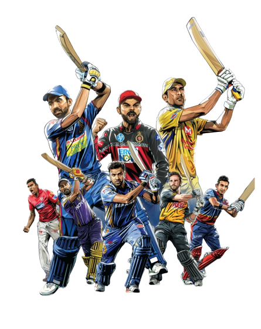

SPORTS

My Top 5 favourite sports are following:
-
Cricket
- Virat Kohli
Achievements:
- Wisden Leading cricketer of the year 2016
- More than 20,000 runs in a decade
- Most successful Indian captain in Test Matches
- Most runs in a single IPL edition(2016)
- Ms Dhoni
Achievements
- MS Dhoni is the only Indian captain who has led India to all three major ICC events
- Dhoni is the fourth fastest batsman who has completed 8000 runs in New Zealand fifth and final match.
- 2008 and 2009 Dhoni was awarded the ICC Player of the Year trophy.
Football
- Lionel Messi
Achievements
- Champions League title with Barcelona.
- Active LaLiga Player with the Highest League Title Wins
- He have Total 5 Ballon d’Or awards
- Cristiano Ronaldo
Achievements
- HE SWEPT THE MAJOR EPL AWARDS FOR THE 2006–07 SEASON.
- RONALDO WON THE EUROPEAN GOLDEN SHOE FOR THE 2007–08 SEASON.
- HE HOLDS THE RECORD FOR MOST GOALS IN A SINGLE CHAMPIONS LEAGUE SEASON.
Hockey
- Mandeep Singh
Achievements
- Ponty Chadha Trophy for the Upcoming Player of the Tournament (2013).
- Best Junior Player of the 2012–14 Men's FIH Hockey World League Final (2014).
- PR Sreejesh
Achievements
- Asian champion’s trophy of Ordos city in 2011 just got lucky for Sreejesh and he bagged Gold Medal in this games.
- He also bagged gold at 2016 Kuantan Asian Champions Trophy games
- He is the hero of the Asian champion’s trophy of 2018 at Muscat, where India bagged a Gold medal.
-
Kabaddi
- Pradeep Narwal
Achievements
- Won VIVO Pro Kabaddi in 2016 and 2017.
- Won Kabaddi World Cup in 2016.
- Asian Kabaddi Championship in 2017.
- Kabaddi Masters Dubai in 2018.
- Pawan Kumar
Achievements
- Most Valuable Player (2018).
- Most raid points (2018) , (2019) and (2021).
-
Badminton
- PV Sindhu
Achievements
- Gold in 2019 World Championships.
- Silver in 2018 Asian Games
- Silver in 2016 Rio Olympics
- Saina Nehwal
Achievements
- Saina Nehwal won the 2012 Bronze Olympic Medal in Badminton and became the first-ever Indian badminton player to win an Olympics medal.
- Saina Nehwal has won 24 international titles, including first rank in Badminton World Federation (BWF) Tour and eleven Superseries title.
- She bagged World no. 1 ranking in 2015.